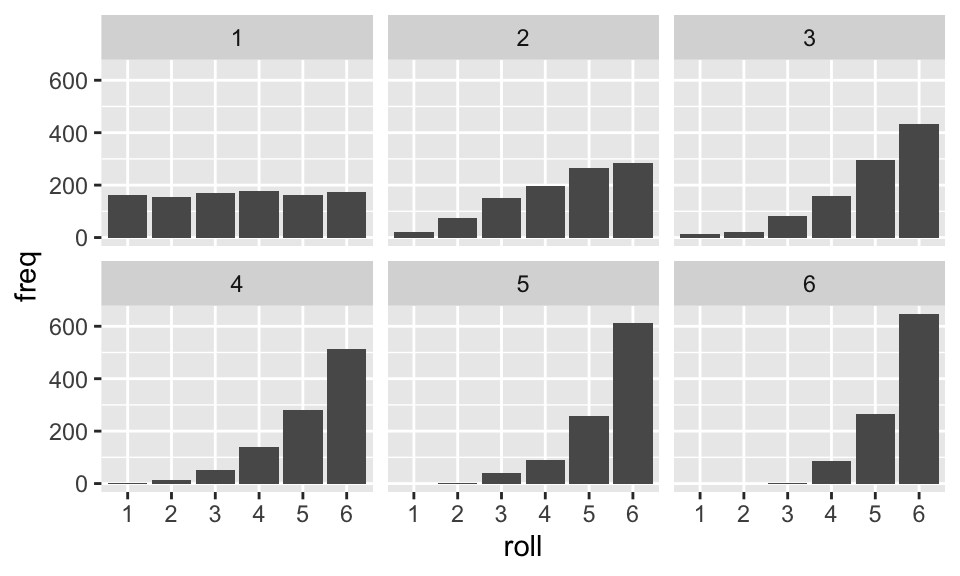

roll_dice = function( ndice ) {
rolls = sample( 1:6, ndice, replace=TRUE )
sum( rolls )
}
# Roll a single die
roll_dice( 1 )[1] 6# Roll 3 dice and add them up.
roll_dice( 3 )[1] 15In this handout, we will look at several ways of doing things over and over again in R. This comes up all the time. Three main ones we have seen are the following:
Coding wise, there are a few ways of repeating yourself. We are going to walk through them and compare these tools to each other.
replicate() commandThis simple command repeats a line of code a given number of times. If the line of code gives you a number back each time it is run, then you will end up with a list of numbers.
To illustrate, say we want to look at rolling dice. Here is some code that provides a function that will roll some number of 6-sided dice:
roll_dice = function( ndice ) {
rolls = sample( 1:6, ndice, replace=TRUE )
sum( rolls )
}
# Roll a single die
roll_dice( 1 )[1] 6# Roll 3 dice and add them up.
roll_dice( 3 )[1] 15If we want to get the sum of three dice over and over, we can replicate:
rolls = replicate( 10, roll_dice( 3 ) )
rolls [1] 7 10 10 12 7 14 11 5 13 9Note how the rolls variable is a nice numeric vector, easy to work with. It is easy to do calculations with it, like take the average:
mean( rolls )[1] 9.8Here we use this to see how often we roll above a 15:
rolls = replicate( 10000, roll_dice( 3 ) )
mean( rolls > 15 )[1] 0.0488rerun() commandThe rerun() command, from the tidyverse, is almost exactly like replicate, but instead of giving a numeric vector of numbers back, it gives an R list. For brevity, I rerun twice in the following:
rolls = rerun( 2, roll_dice(3) )Warning: `rerun()` was deprecated in purrr 1.0.0.
ℹ Please use `map()` instead.
# Previously
rerun(2, roll_dice(3))
# Now
map(1:2, ~ roll_dice(3))rolls[[1]]
[1] 17
[[2]]
[1] 8Each element of the list is itself a list of numbers! Why would someone make such an annoying command like that? This is useful if the function we are rerunning gives us back multiple things. For example:
roll_dice_extended = function( ndice ) {
rolls = sample( 1:6, ndice, replace=TRUE )
c( mean = mean( rolls ), median = median( rolls ), max = max( rolls ) )
}
roll_dice_extended() mean median max
3.333333 3.500000 5.000000 Now when we rerun we get this:
rolls = rerun( 2, roll_dice_extended(3) )Warning: `rerun()` was deprecated in purrr 1.0.0.
ℹ Please use `map()` instead.
# Previously
rerun(2, roll_dice_extended(3))
# Now
map(1:2, ~ roll_dice_extended(3))rolls[[1]]
mean median max
3.333333 3.000000 6.000000
[[2]]
mean median max
4.666667 5.000000 6.000000 But this is hard to work with. All our numbers are nested and weird. But there is a solution, which is the “rerun + bind_rows combo”. Once we have a list of our answers, we can “stack” them with bind_rows:
bind_rows( rolls )# A tibble: 2 × 3
mean median max
<dbl> <dbl> <dbl>
1 3.33 3 6
2 4.67 5 6We can also give each row a name:
bind_rows( rolls, .id="runID" )# A tibble: 2 × 4
runID mean median max
<chr> <dbl> <dbl> <dbl>
1 1 3.33 3 6
2 2 4.67 5 6Side Note: I recommend making your function give back a simple little dataframe of all your stuff. It is less prone to having weird errors. The bind_rows() method does really well with data.frames or tibbles. Here is an updated version of the above:
roll_dice_extended = function( ndice ) {
rolls = sample( 1:6, ndice, replace=TRUE )
data.frame( mean = mean( rolls ), median = median( rolls ), max = max( rolls ) )
}
roll_dice_extended() mean median max
1 3.5 3 6rolls = rerun( 6, roll_dice_extended(3) )Warning: `rerun()` was deprecated in purrr 1.0.0.
ℹ Please use `map()` instead.
# Previously
rerun(6, roll_dice_extended(3))
# Now
map(1:6, ~ roll_dice_extended(3))rolls = bind_rows( rolls, .id="runID" )
rolls runID mean median max
1 1 2.333333 2 3
2 2 3.333333 4 5
3 3 4.000000 4 5
4 4 2.666667 2 4
5 5 3.666667 4 5
6 6 3.333333 4 5replicate() doesn’t do well with fancy functionsThe replicate() command doesn’t act nice in the following:
rolls = replicate( 2, roll_dice_extended(3) )
rolls, , 1
mean median max
1 3.333333 3 5
, , 2
mean median max
1 3 2 5 That doesn’t look like a fun thing to work with. (It is a 3 dimensional array of output, in case you are wondering.) Use rerun + bind_rows; it is easier to control and understand.
If your function that you want to repeat returns a single number with each call, use replicate(). If it returns more than one thing, use the rerun() + bind_rows() combination.
map(), another way of repeating yourselfThe above runs the exact same code over and over. Sometimes you want to run the same function on a collection of different things (e.g., fit a loess line for each of a series of bandwidths). This is done with the map() command which takes a list of things, and then calls a function for each thing on that list.
To illustrate, we will see how the largest number rolled changes as a function of the number of dice rolled. To start, let’s roll 1 die, then 2 dice, then 3 dice, and each time calculate the average, median, and max:
dice = 1:3
result = map( dice, roll_dice_extended )
result[[1]]
mean median max
1 5 5 5
[[2]]
mean median max
1 3.5 3.5 5
[[3]]
mean median max
1 4 5 5Note unlike rerun or replicate we are not calling our roll_dice_extended function, we are just giving the name of it. You can tell since we do not have the () after roll_dice_extended, we just pass the name of the function we want to call. We are asking map to call roll_dice_extended over and over. For rerun or replicate, by comparison, we provide a stand-alone complete line of code that would run by itself. For map we just give the name of a function to run.
We can make our output nicer with the same bind_rows trick from rerun():
bind_rows( result ) mean median max
1 5.0 5.0 5
2 3.5 3.5 5
3 4.0 5.0 5Even better is using the map_df() method, which works nicely provided your function returns a dataframe:
result = map_df( dice, roll_dice_extended )
result$ndice = dice
result mean median max ndice
1 5.000000 5.0 5 1
2 2.500000 2.5 4 2
3 4.333333 4.0 6 3Our little simulation is a bit sad in that we only have a single trial for each of our number of dice scenarios. What we really want is to know the distribution of the maximum roll for each number of dice. We do this by repeating ourself and then repeating this repeating ourself!
Study this:
one_trial = function( ndice ) {
rolls = rerun( 1000, roll_dice_extended( ndice ) )
rolls = bind_rows( rolls )
tbl = table( rolls$max )
tbl
}
one_trial( 1 )Warning: `rerun()` was deprecated in purrr 1.0.0.
ℹ Please use `map()` instead.
# Previously
rerun(1000, roll_dice_extended(ndice))
# Now
map(1:1000, ~ roll_dice_extended(ndice))
1 2 3 4 5 6
179 166 164 167 155 169 Then this:
result = map( 1:6, one_trial )
result = bind_rows( result )
result$ndice = 1:6
result# A tibble: 6 × 7
`1` `2` `3` `4` `5` `6` ndice
<table[1d]> <table[1d]> <table[1d]> <table[1d]> <table[1d]> <table[1d]> <int>
1 162 154 171 178 163 172 1
2 23 76 150 198 267 286 2
3 12 20 81 159 295 433 3
4 1 12 51 141 282 513 4
5 NA 1 41 89 257 612 5
6 NA NA 4 85 265 646 6We can then make a nice plot:
resL = pivot_longer( result, `1`:`6`,
names_to="roll", values_to="freq" ) %>%
filter( !is.na( freq ) )
resL$freq = as.numeric( resL$freq )
ggplot( resL, aes( roll, freq ) ) +
facet_wrap( ~ndice ) +
geom_col( )
Note. The as.numeric line is because the table command makes table objects which are really just lists of numbers, but it seems cleaner to tell R to knock it off and just let it be a number. Not doing this still works fine, it just gives a warning in ggplot()
In the following we look at a few cool functions that help with mapping.
relocate()Not really mapping specific, but still a nice way to move a variable to the start of a data frame.
relocate( resL, freq )# A tibble: 33 × 3
freq ndice roll
<dbl> <int> <chr>
1 162 1 1
2 154 1 2
3 171 1 3
4 178 1 4
5 163 1 5
6 172 1 6
7 23 2 1
8 76 2 2
9 150 2 3
10 198 2 4
# ℹ 23 more rowspull()This will grab a column from a data frame in a list of pipe commands, which can make it easier to plug into some other tools.
Here we pull the roll column and then hand it to the table() command to count the number of instances of each roll.
resL %>% pull( roll ) %>%
table().
1 2 3 4 5 6
4 5 6 6 6 6 set_names( list, names )On the fly name a list before handing to map!
dice = 2:6
dice %>% set_names( paste0( dice, " dice" ) ) %>%
map_df( roll_dice_extended, .id = "scenario" ) scenario mean median max
1 2 dice 2.000000 2.0 2
2 3 dice 3.666667 4.0 5
3 4 dice 4.750000 6.0 6
4 5 dice 3.000000 2.0 5
5 6 dice 5.333333 5.5 6unpack() and pack()These will translate a data frame column into individual columns. You can end up with a data frame column if you use map to make a new column in your data:
scenarios = tibble( n_dice = 1:6 )
scenarios = scenarios %>%
mutate( result = map_df( n_dice, roll_dice_extended ) )
scenarios# A tibble: 6 × 2
n_dice result$mean $median $max
<int> <dbl> <dbl> <int>
1 1 1 1 1
2 2 3.5 3.5 5
3 3 2.33 1 5
4 4 2.5 1.5 6
5 5 4 4 5
6 6 3 2 6Notice the weird $ in the printout? This is because the three columns are inside the dataframe of result. You can unpack it like so:
unpack( scenarios, result )# A tibble: 6 × 4
n_dice mean median max
<int> <dbl> <dbl> <int>
1 1 1 1 1
2 2 3.5 3.5 5
3 3 2.33 1 5
4 4 2.5 1.5 6
5 5 4 4 5
6 6 3 2 6to get your nice, normal dataframe.